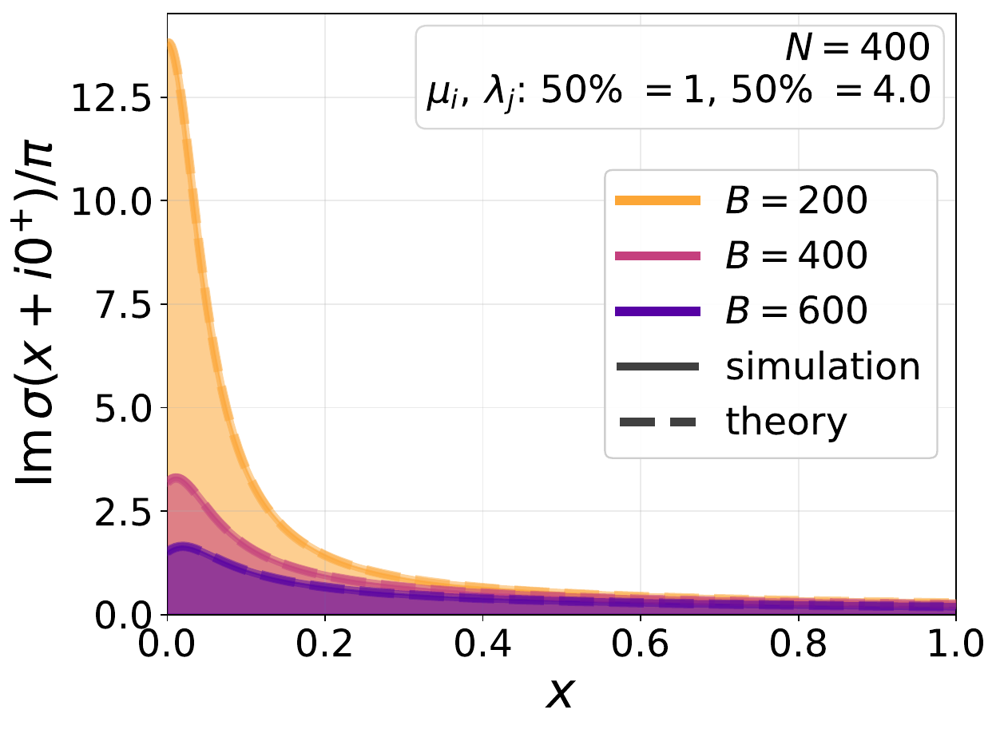
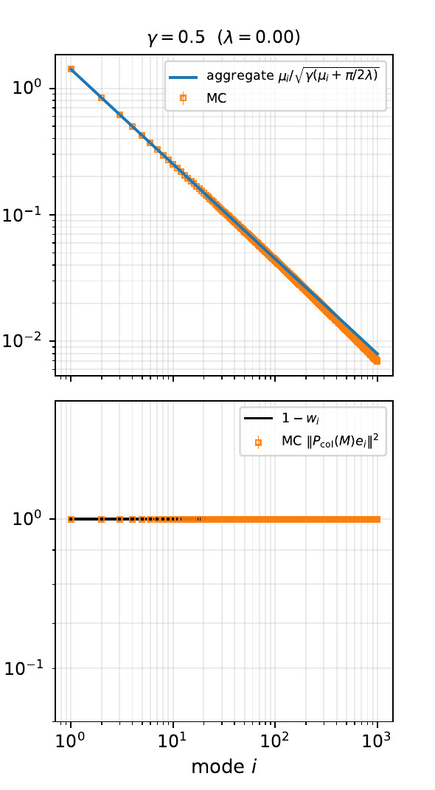
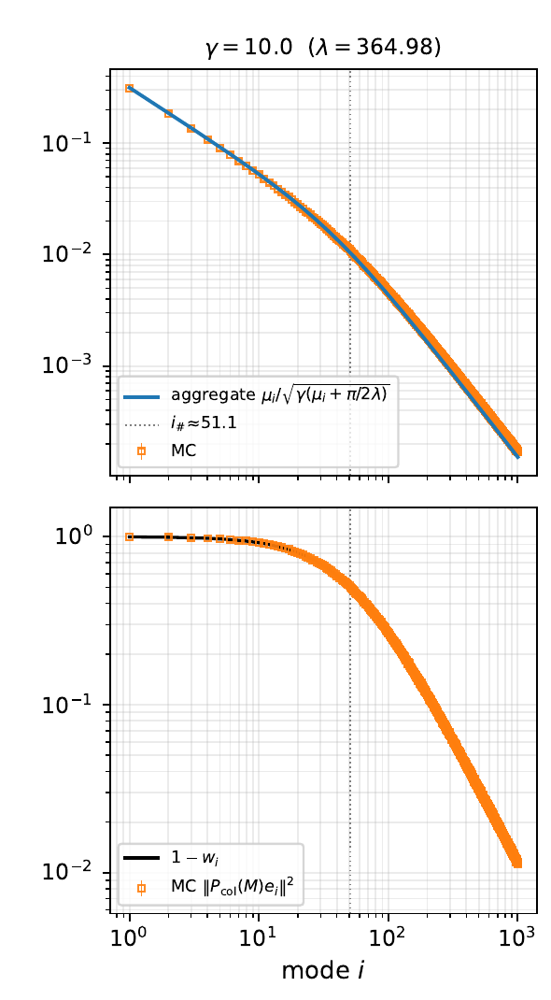
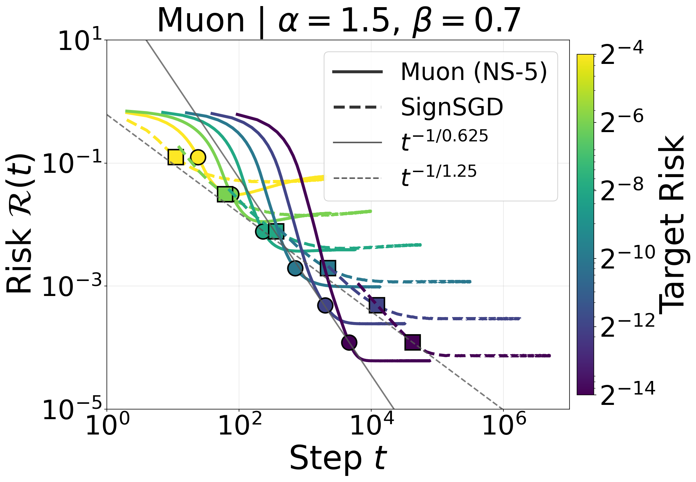
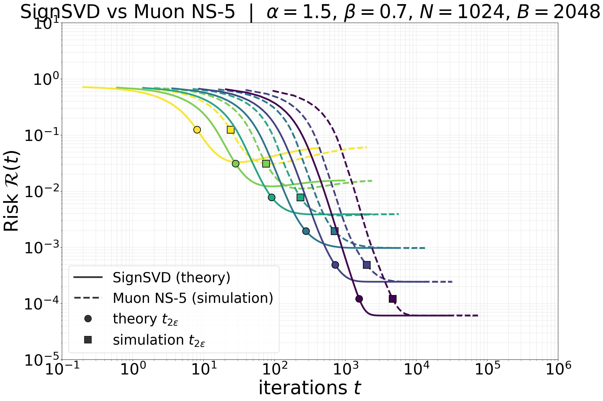

When matrix geometry changes the effective covariance
The first three lectures treated power-law covariance as a structure on directions. For a weight matrix, the minibatch gradient \(G\) is itself a matrix. If
\[ \begin{gathered} G=U\operatorname{diag}(\sigma_1,\ldots,\sigma_r)V^\top,\\ \boxed{\operatorname{SignSVD}(G)=UV^\top.} \end{gathered} \]
SignSVD keeps the singular vectors and replaces every nonzero singular value by one. Muon approximates this operation with a few matrix multiplications.
How do covariance and batch size control gradient orthogonalization?
Let
\[ \mathcal L(\theta) =\mathbb E_{(X,Y)} \left[\ell\!\left(F_\theta(X),Y\right)\right]. \]
For one layer, write \(z=Wa\) and \(\delta=\nabla_z\ell(F_\theta(X),Y)\). A perturbation \(dW\) gives
\[ \begin{aligned} d\ell &=\sum_{i,j}\delta_i a_j\,dW_{ij} =\langle\delta\otimes a,dW\rangle_F,\\ &\hspace{2.6em}\Longrightarrow\quad \boxed{\nabla_W\ell=\delta\otimes a.} \end{aligned} \]
For a minibatch of \(B\) examples,
\[ \boxed{ G_B=\frac1B\sum_{b=1}^B\delta_b\otimes a_b, \qquad \operatorname{rank}(G_B)\le B. } \]
The activation covariance acts on the input side of \(W\).
The backpropagated-error covariance acts on the output side.
Batch size limits the number of matrix directions visible to a spectral update.
Take independent
\[ x\sim\mathcal N(0,\Sigma_{\rm in}), \qquad y\sim\mathcal N(0,\Sigma_{\rm out}), \]
and let \(\Delta=W-W_\star\). The single-sample loss is
\[ \ell(W;x,y) =\frac12\langle y\otimes x,\Delta\rangle_F^2. \]
Its gradient and population Hessian are
\[ \boxed{ \begin{aligned} \nabla_W\ell &=(y\otimes x)\langle y\otimes x,\Delta\rangle_F,\\ \mathcal K(H) &=\Sigma_{\rm out}H\Sigma_{\rm in}. \end{aligned} } \]
This is ordinary least squares whose matrix layout remains visible.
In the two covariance eigenbases,
\[ \begin{aligned} \Sigma_{\rm out}u_i&=\mu_i u_i, &\Sigma_{\rm in}v_j&=\lambda_jv_j,\\ \mathcal K(u_i\otimes v_j) &=\mu_i\lambda_j(u_i\otimes v_j),\\ \Delta&=\sum_{i,j}a_{ij}(u_i\otimes v_j). \end{aligned} \]
Consequently,
\[ \boxed{ \mathcal R(W) =\frac12\sum_{i,j}\mu_i\lambda_j a_{ij}^2. } \]
The eigenbasis is indexed by pairs \((i,j)\), so an \(N\times N\) matrix naturally has \(N^2\) spectral order parameters.
| update | matrix operation | action on \(\sigma\) |
|---|---|---|
| SGD | \(U\Sigma V^\top\) | \(\sigma\mapsto\sigma\); preserves the gradient hierarchy |
| power \(p\) | \(U\Sigma^pV^\top\) | \(\sigma\mapsto\sigma^p\); interpolates or reverses the hierarchy |
| SignSVD | \(UV^\top\) | \(\sigma\mapsto1\) on the nonzero subspace |
| instant Shampoo | \((GG^\top)^{\dagger/4}G(G^\top G)^{\dagger/4}\) | also \(\sigma\mapsto1\) |
| finite-NS Muon | \(\operatorname{NS}_K(G)\) | rapidly moves \(\sigma\) toward one |
Full flattening is one point on a broader spectral-power design axis.
For \(G=U\Sigma V^\top\),
\[ \boxed{ \operatorname{polar}(G) =(GG^\top)^{\dagger/2}G =UV^\top. } \]
It is basis-covariant:
\[ \operatorname{polar}(QGR^\top) =Q\,\operatorname{polar}(G)\,R^\top. \]
Entrywise SignSGD instead uses
\[ [\operatorname{sign}(G)]_{ij}=\operatorname{sign}(G_{ij}), \]
so it depends on the coordinate basis.
A stylized Muon update is
\[ \begin{aligned} M_{t+1}&=\beta_{\rm mom}M_t+G_t,\\ W_{t+1}&=W_t-\eta\,\operatorname{NS}_K(M_{t+1}). \end{aligned} \]
It adds two operations to exact SignSVD:
Instantaneous Shampoo gives the same polar factor because
\[ (GG^\top)^{\dagger/4}G(G^\top G)^{\dagger/4}=UV^\top. \]
Historical context: Carlson–Cevher–Carin (2015); Tuddenham–Prügel-Bennett–Hare (2022); Gupta–Koren–Singer (2018).
Start with the cheap Frobenius normalization
\[ X_0=\frac{G}{\|G\|_F+\varepsilon}, \qquad \|X_0\|_{\rm op}\le1. \]
The classical polar iteration is
\[ X_{k+1} =\frac12(3X_k-X_kX_k^\top X_k), \qquad s_{k+1}=\frac12(3s_k-s_k^3). \]
Muon commonly uses five steps of
\[ X_{k+1}=aX_k+(bA_k+cA_k^2)X_k, \qquad A_k=X_kX_k^\top, \qquad (a,b,c)\approx(3.44,-4.78,2.03). \]
The large slope accelerates sharply near zero.
From now on:
\[ \boxed{ \beta_{\rm mom}=0, \qquad \operatorname{NS}_K(G)\longrightarrow\operatorname{polar}(G). } \]
The resulting algorithm is exact SignSVD.
This removes two separate approximation questions:
Momentum returns only after the covariance and batch-size effects are understood.
A matrix update still splits into descent and volatility.
For residuals \(d_b=\langle y_b\otimes x_b,\Delta\rangle_F\), define
\[ \begin{gathered} G(\Delta)=\frac1B\sum_{b=1}^Bd_b(y_b\otimes x_b), \qquad S=\operatorname{polar}(G),\\ a_{ij}=u_i^\top\Delta v_j,\qquad s_{ij}=u_i^\top S v_j,\qquad q_{ij}=a_{ij}^2. \end{gathered} \]
Then exactly
\[ \boxed{ q_{ij}^+=q_{ij}-2\eta a_{ij}s_{ij}+\eta^2s_{ij}^2. } \]
Define deterministic kernels by
\[ \mathbb E[a_{ij}s_{ij}\mid\Delta] \simeq \frac{\mathfrak d_{ij}}{\sqrt{\mathcal R}}q_{ij}, \qquad \mathbb E[s_{ij}^2\mid\Delta] \simeq\mathfrak v_{ij}. \]
Then
\[ \boxed{ q_{ij}(t+1) =q_{ij}(t) -\frac{2\eta\mathfrak d_{ij}(t)} {\sqrt{\mathcal R(t)}}q_{ij}(t) +\eta^2\mathfrak v_{ij}(t), } \]
with
\[ \mathcal R(t)=\frac12\sum_{i,j}\mu_i\lambda_jq_{ij}(t). \]
The random-matrix problem is to compute \((\mathfrak d_{ij},\mathfrak v_{ij})\) from the two covariances and \(B\).
First decouple residuals from the Gaussian data:
\[ G_0=\frac1B YDX^\top, \qquad H_0=G_0G_0^\top. \]
Rewrite
\[ H_0=\frac1B YCY^\top, \qquad C=\frac1B DX^\top XD. \]
Conditioned on \(X\), the outer matrix is an ordinary sample covariance matrix with population matrix \(C\).
One Marchenko–Pastur computation is nested inside another.
When \(D=I\) and the dimensions are square, the resulting spectrum is the order-two Fuss–Catalan law.
Condition on \(C\) and set
\[ \widehat H_0=\Lambda^{1/2}WW^\top\Lambda^{1/2}, \qquad \widehat R=(\widehat H_0-zI)^{-1}. \]
For an independent Gaussian direction \(\widetilde W\),
\[ \boxed{ \mathbb E[F(W)W^\top\mid C] = \mathbb E[ (\partial_{\widetilde W}F(W))\widetilde W^\top \mid C]. } \]
The two directional derivatives are
\[ \partial_{\widetilde W}\widehat H_0 =\Lambda^{1/2} (\widetilde W W^\top+W\widetilde W^\top) \Lambda^{1/2}, \qquad \partial_{\widetilde W}\widehat R =-\widehat R(\partial_{\widetilde W}\widehat H_0)\widehat R. \]
Apply matrix Stein to \(F(W)=\widehat R\Lambda^{1/2}W\).
The independent direction produces two contractions:
\[ \mathbb E_{\widetilde W}[\widetilde W A\widetilde W^\top] =\frac1p\operatorname{tr}(A)I \quad\text{(coherent)}, \]
while the crossed contraction is an explicit \(p^{-1}\) matrix correction. The master equation is
\[ \boxed{ \mathbb E[\widehat R\widehat H_0\mid C] = \mathbb E\!\left[ q_p(z)\widehat R\Lambda -\frac1p\widehat R\widehat H_0\widehat R\Lambda \mid C \right], } \]
where
\[ q_p(z)=1-\frac1p\operatorname{tr}(\widehat R\widehat H_0). \]
The incoherent correction vanishes at leading order, giving
\[ \widehat R(z) \simeq (\gamma_{\rm out}q(z)C-zI)^{-1}. \]
Therefore
\[ \boxed{ q(z)= \left[ 1+\int \frac{t}{\gamma_{\rm out}q(z)t-z}\,d\nu_C(t) \right]^{-1}. } \]
The normalized resolvent trace is
\[ m_{H_0}(z) =\frac1{\gamma_{\rm out}} \int\frac{d\nu_C(t)} {\gamma_{\rm out}q(z)t-z} +\frac{\gamma_{\rm out}^{-1}-1}{z}. \]
The inner law \(\nu_C\) comes from the same calculation applied to \(C=DX^\top XD/B\).
Set
\[ \sigma=\frac1B\operatorname{tr}(R\Sigma_{\rm out}), \qquad \widetilde\sigma =\frac1B\operatorname{tr}(\widetilde R\Sigma_{\rm in}). \]
The fixed point is
\[ \boxed{ \begin{aligned} \sigma &=\frac1B\sum_i\frac{\mu_i}{\widetilde s_1\mu_i-z}, & \widetilde\sigma &=\frac1B\sum_j\frac{\lambda_j}{s_1\lambda_j-z},\\ s_1&=\widetilde s_1\frac{\sigma}{\widetilde\sigma}, & \widetilde s_1\sigma&=f(\xi),\\ \xi&=(-2z\sigma\widetilde\sigma)^{-1/2}. \end{aligned} } \]
Here \(f(\xi)=1-\sqrt\pi\,\xi e^{\xi^2}\operatorname{erfc}(\xi)\) records the limiting residual-weight distribution.

The fixed-point density matches Monte Carlo on both sides of the batch threshold.
The normalized gradient has a residual diagonal
\[ \frac{G}{\sqrt{2\mathcal R}} =\frac1B Y\widehat D X^\top. \]
Replacing \(\widehat D\) by an independent diagonal with the same empirical law does not change the leading bulk spectrum.
But descent requires the overlap with the current error:
\[ \boxed{ \mathbb E[R(z)G\mid\Delta] \simeq c(z)\, R_{\rm eq}(z)\Sigma_{\rm out}\Delta\Sigma_{\rm in} \widetilde R_{\rm eq}(z). } \]
The dependence between residuals and data is precisely what makes this observable nonzero.
For a spectral transform \(\varphi\),
\[ \varphi(H)G =-\frac1{2\pi i}\oint\varphi(z)R(z)G\,dz. \]
Thus
\[ \boxed{ \mathfrak d_{ij} =-\frac{2\sqrt{\mathcal R}\,\mu_i\lambda_j}{\pi} \int_0^\infty x\,\varphi(2\mathcal R x)\, \operatorname{Im}\!\left[ \frac{\xi^2f(\xi)} {(\widetilde s_1\mu_i-z)(s_1\lambda_j-z)} \right]_{z=x+i0^+}\,dx. } \]
For SignSVD, \(\varphi(s)=s^{-1/2}\), so the current-risk dependence cancels.
Take
\[ \Sigma_{\rm in}=\Sigma_{\rm out}=I_N. \]
All \(N^2\) modes are exchangeable:
\[ \mathcal R(t+1) =\mathcal R(t) -2\eta\mathfrak d\sqrt{\mathcal R(t)} +\frac{\eta^2}{2}\mathfrak v. \]
| algorithm | drift \(\mathfrak d\) | volatility \(\mathfrak v\) |
|---|---|---|
| SignSVD | \(C(N/B)\) | \(\min\{B,N\}\) |
| SignSGD | \(\mathcal N_B/\sqrt\pi\) | \(N^2\) |
Here \(\mathcal N_B\sim\sqrt B\) and \(C(N/B)\) is a spectral moment of the fixed-point density.
Separate one entry’s small signal from the diffuse residual:
\[ G_{pn} \approx \frac1B\sum_{b=1}^B \left[ y_{bp}^2x_{bn}^2\Delta_{pn} +y_{bp}x_{bn}\sqrt{2\mathcal R}\,z_b \right]. \]
A local limit theorem gives density convergence of the second term to \(Z\sim\mathcal N(0,s^2)\). For small \(\mu\), \(\mathbb E[\operatorname{sign}(Z+\mu)] =\sqrt{2/\pi}\,\mu/s+O((\mu/s)^3)\), so
\[ \boxed{ \mathfrak d_{pn}^{\rm SignSGD} =\frac{\mathcal N_B}{\sqrt\pi} \sim\sqrt{\frac B\pi}. } \]
Each entry of \(S=\operatorname{sign}(G)\) is \(\pm1\), so
\[ \boxed{ s_{pn}^2=1, \qquad \|S\|_F^2=N^2. } \]
\[ \eta_\star(t) =\frac{2\mathfrak d\sqrt{\mathcal R(t)}}{\mathfrak v}, \qquad \frac{\eta_\star^{\rm SignSVD}} {\eta_\star^{\rm SignSGD}} \asymp \begin{cases} \sqrt N,&B\ge N,\\ N/\sqrt B,&B\le N. \end{cases} \]
Their learning-rate scales differ even when tuned contractions agree.
After tuning each method to its natural learning-rate scale,
\[ \text{SignSVD contraction} \asymp \text{SignSGD contraction} \]
up to absolute constants.
Muon’s spectral geometry becomes useful only when the covariance is anisotropic.
This sanity check prevents a normalization difference from being mistaken for an algorithmic advantage.
Half-anisotropy turns \(N^2\) paired modes into \(N\) row norms.
Set
\[ \Sigma_{\rm in}=I_N, \qquad \Sigma_{\rm out} =U\operatorname{diag}(\mu_1,\ldots,\mu_N)U^\top. \]
Define the row-projected risks
\[ \boxed{ r_i(t)=\sum_{j=1}^Nq_{ij}(t) =\|\Delta_t^\top u_i\|^2, \qquad \mathcal R(t)=\frac12\sum_i\mu_i r_i(t). } \]
They satisfy
\[ r_i(t+1) =r_i(t) -\frac{2\eta\mathfrak d_i}{\sqrt{\mathcal R(t)}}r_i(t) +\eta^2\mathfrak v_i. \]
Proposition. Let \(S=\operatorname{polar}(G)=U_rV_r^\top\). Then
\[ \boxed{ \|S^\top u_i\|^2 =u_i^\top P_{\operatorname{col}(G)}u_i. } \]
If \(B\ge N\) and \(G\) has full row rank, this equals one for every mode. If \(B<N\) and \(\operatorname{rank}(G)=B\), then
\[ 0\le\mathfrak v_i\le1, \qquad \sum_i\mathfrak v_i=B. \]
Because \(S=U_rV_r^\top\),
\[ SS^\top =U_rV_r^\top V_rU_r^\top =U_rU_r^\top =P_{\operatorname{col}(G)}. \]
Therefore
\[ \|S^\top u_i\|^2 =u_i^\top SS^\top u_i. \]
For a general spectral map,
\[ SS^\top =U_r\operatorname{diag} \left(\varphi(\sigma_k^2)^2\sigma_k^2\right)U_r^\top, \]
so the volatility keeps a nontrivial spectral weight.
The map \(\sigma_k\mapsto1\) turns a difficult variance calculation into a projector identity.
Set \(\gamma=N/B\). The reduced fixed point is
\[ \begin{aligned} \sigma &=\frac1B\sum_i\frac{\mu_i}{\widetilde s_1\mu_i-z}, & \widetilde s_1\sigma&=f(\xi),\\ \widetilde\sigma &=\frac{f(\xi)-\gamma}{z}, & s_1&=z+\frac{\gamma}{\widetilde\sigma}. \end{aligned} \]
\[ \boxed{ \begin{aligned} \rho_i(x) &=\frac1\pi\operatorname{Im} \frac1{\widetilde s_1(x+i0^+)\mu_i-x},\\ \mathfrak d_i &=\frac1\gamma\int_0^\infty\sqrt x\,\rho_i(x)\,dx,\\ \mathfrak v_i &=\int_0^\infty\rho_i(x)\,dx. \end{aligned} } \]
For \(B\ge N\),
\[ \boxed{ \mathfrak d_i=\sqrt{\frac{\mu_i}{\gamma}}, \qquad \mathfrak v_i=1. } \]
In algorithmic time,
\[ \frac{dr_i}{d\tau} =-2\sqrt{\frac{\mu_i}{\gamma}}\,r_i. \]
Thus
\[ \text{GD: }-\mathcal K(\Delta), \qquad \text{SignSVD: }-\mathcal K^{1/2}(\Delta). \]

Define \(\Lambda\) by
\[ B=\sum_i\frac{\Lambda\mu_i}{1+\Lambda\mu_i}. \]
Then
\[ \mathfrak v_i =\frac{\Lambda\mu_i}{1+\Lambda\mu_i}, \]
and
\[ \mathfrak d_i\approx \begin{cases} \sqrt{\mu_i}\sqrt{B/N}, &\Lambda\mu_i\gg1,\\ \mu_i\sqrt{2\Lambda B/(\pi N)}, &\Lambda\mu_i\ll1. \end{cases} \]
The head is preconditioned; the unresolved tail returns to SGD-like drift.

Take
\[ \mu_i=i^{-\alpha}, \qquad r_i(0)=i^{-\beta}, \qquad \alpha+\beta>1. \]
The boundary \(i_\#=\Lambda^{1/\alpha}\) obeys
\[ \boxed{ i_\#\asymp \begin{cases} B,&\alpha>1,\\ B/\log(N/B),&\alpha=1,\\ B^{1/\alpha}/N^{1/\alpha-1},&0<\alpha<1. \end{cases} } \]
For \(\alpha=\tfrac12\), \(i_\#\asymp B^2/N\): a batch of order \(\sqrt N\) resolves only order-one modes.
| mode range | SignSVD drift | SignSVD volatility |
|---|---|---|
| resolved head | \(\sqrt{\mu_i}\sqrt{B/N}\) | \(1\) |
| unresolved tail | \(\mu_i\sqrt{2\Lambda B/(\pi N)}\) | \(\Lambda\mu_i\) |
For comparison, half-anisotropic SignSGD retains
\[ \mathfrak d_i^{\rm SignSGD} =\frac{\mu_i\mathcal N_B} {\sqrt{\pi\overline\mu}}, \qquad \overline\mu=\frac1N\sum_i\mu_i. \]
Batch size is a spectral resolution scale, not only a variance-reduction parameter.
For kernels \((\mathfrak d_i,\mathfrak v_i)\), define
\[ \mathcal S =\sum_i\frac{\mu_i\mathfrak v_i}{2\mathfrak d_i}, \qquad \boxed{\eta^\star=\frac{2\sqrt\epsilon}{\mathcal S}.} \]
Use this single constant learning rate throughout the run and measure
\[ t_{4\epsilon} =\inf\{t\ge0:\mathcal R(t)\le4\epsilon\}. \]
This avoids comparing two optimizers at the same numerical learning rate even though their update norms differ by powers of \(N\).
Theorem (P.–Marshall–Benigni–Wang–Agarwala–P., 2026). Let \(\gamma=N/B\le1\), \(\mu_i=i^{-\alpha}\), \(r_i(0)=i^{-\beta}\), and \(\alpha+\beta>1\). Then
\[ t_{4\epsilon}^{\rm SignSVD} \asymp \begin{cases} \gamma N^{1-\alpha/2} \epsilon^{-\alpha/[2(\alpha+\beta-1)]},&\beta<1,\\ \mathcal S_{\rm SignSVD}\epsilon^{-1/2},&\beta>1, \end{cases} \]
while
\[ t_{4\epsilon}^{\rm SignSGD} \asymp \begin{cases} \dfrac{\pi N^2\overline\mu}{B} \epsilon^{-\alpha/(\alpha+\beta-1)},&\beta<\alpha+1,\\ \mathcal S_{\rm SignSGD}\epsilon^{-1/2},&\beta>\alpha+1. \end{cases} \]
The first SignSVD branch assumes \(0<\alpha<2\); boundaries carry logarithmic corrections.
| target regime | range | comparison |
|---|---|---|
| tail-heavy | \(\beta<1\) | SignSVD is polynomially faster as \(\epsilon\to0\) |
| intermediate | \(1<\beta<\alpha+1\) | SignSGD may lead early; SignSVD wins at high accuracy |
| head-heavy | \(\beta>\alpha+1\) | both use the \(\epsilon^{-1/2}\) branch |
The mechanism is spectral:
\[ \mathfrak d_i^{\rm SignSVD}\propto\mu_i^{1/2}, \qquad \mathfrak d_i^{\rm SignSGD}\propto\mu_i. \]

Tail-heavy example: \(\alpha=1.5\), \(\beta=0.7\), \(N=1024\), \(B=2048\). Solid: no-momentum Muon NS-5. Dashed: SignSGD.
Momentum is a separate temporal question.

In this model, the finite polar approximation is a small correction to the exact SignSVD dynamics.
Suppose \(\operatorname{Corr}(\xi_t,\xi_{t+k}) \approx\beta_{\rm mom}^{\,k}\). Then
\[ \boxed{ \begin{aligned} \operatorname{Var}\!\left(\sum_{t=1}^T\xi_t\right) &\approx Tv\left(1+2\sum_{k\ge1}\beta_{\rm mom}^k\right)\\ &= Tv\,\frac{1+\beta_{\rm mom}}{1-\beta_{\rm mom}},\\ \text{SD inflation} &=\sqrt{\frac{1+\beta_{\rm mom}}{1-\beta_{\rm mom}}}. \end{aligned} } \]
Define \(\mathcal N_{\rm eff}\) by \(\mathcal R_\infty\approx(\eta\mathcal N_{\rm eff}/2)^2\).
| \(\beta_{\rm mom}\) | measured \(\mathcal N_{\rm eff}\) | AR(1) prediction |
|---|---|---|
| \(0\) | \(9.97\) | baseline |
| \(0.90\) | \(36.90\) | \(36.59\) |
| \(0.95\) | \(52.49\) | \(52.43\) |
| \(0.99\) | \(117.33\) | \(118.42\) |
Fixed learning rate. Each run fixes \(\eta\); reaching floor \(\epsilon\) requires \(\eta^\star=2\sqrt\epsilon/\mathcal N_{\rm eff}\) (model-specific).
Elliot Paquette, Noah Marshall, Lucas Benigni, Guangyuan Wang, Atish Agarwala, and Courtney Paquette. “Phases of Muon: When Muon Eclipses SignSGD.” 2026. arXiv:2605.09552
Keller Jordan et al. “Muon: An Optimizer for Hidden Layers in Neural Networks.” 2024. Online article
Jingyuan Liu et al. “Muon Is Scalable for LLM Training.” 2025. arXiv:2502.16982
Vineet Gupta, Tomer Koren, and Yoram Singer. “Shampoo: Preconditioned Stochastic Tensor Optimization.” ICML 2018. PMLR
Ke Liang Xiao, Noah Marshall, Atish Agarwala, and Elliot Paquette. “Exact Risk Curves of SignSGD in High Dimensions.” ICLR 2025. OpenReview
\[ G_B=\frac1B\sum_bd_b(y_b\otimes x_b) \]
The batch gradient is low rank and has two covariance geometries.
\[ \mu_i\longmapsto\sqrt{\mu_i} \]
Resolved modes receive square-root covariance drift.
\[ \sum_i\mathfrak v_i=B \]
The batch determines which modes are preconditioned.
Muon’s matrix operation matters when anisotropy and target mass make weak covariance directions the optimization bottleneck.